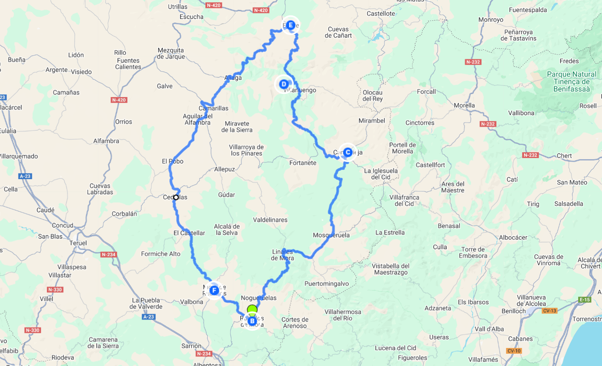
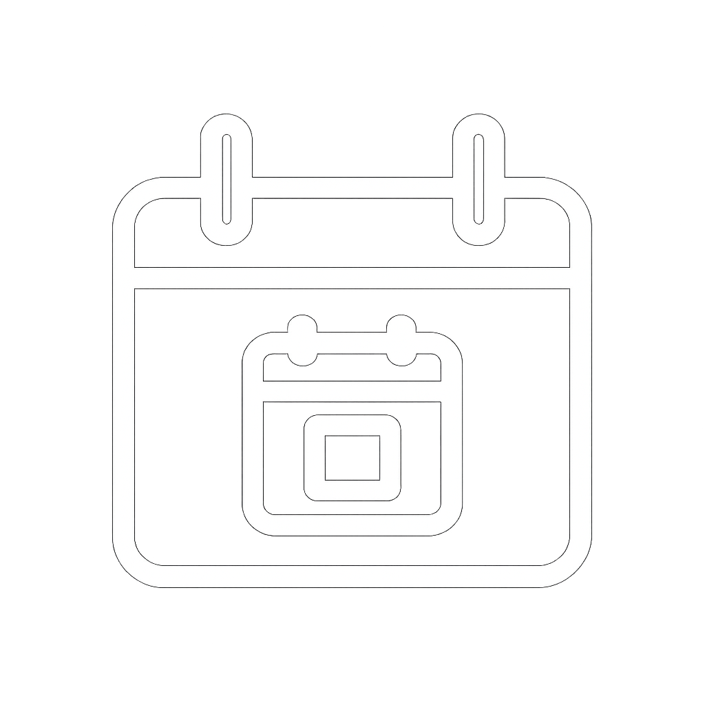

RUTA DEL SILENCIO ( THE SILENT ROUT )

Olvídate del mapa y prepárate para la experiencia motera más pura. Esto no es un simple viaje; es la Ruta del Silencio (A-1702), una leyenda grabada en las curvas de Teruel, diseñada para que te olvides del mundo y te concentres solo en el rugido de tu motor. Te esperan más de 300 kilómetros de asfalto prístino, paisajes que cortan la respiración y una quietud que solo se rompe con el viento.
Puntos claves que no te puedes perder:
- Cantavieja: Haz una parada obligatoria en este pueblo majestuoso. Su imponente castillo templario te transportará a otra época. ¡Un marco épico para tu moto!
- Los Túneles de Pitarque: Siente la adrenalina al atravesar estos pasos excavados en la roca. Una sucesión de curvas y oscuridad que pondrá a prueba tus habilidades
- Iconos Moteros: La ruta está marcada por sus tótems:
- El Emblemático Guante Motero (el Guante del Silencio)
- La enigmática Cabra del Silencio
- El icónico Bus Caimán.
Cada uno es una foto obligada, un recordatorio de que estás siguiendo los pasos de miles de apasionados por las dos ruedas. No es una carretera; es un santuario. Vívela, siéntela y domínala. ¡Tu motor ya está pidiendo asfalto! ¿A qué esperas para vivir el silencio más ruidoso de tu vida?
✔️ TU VIAJE INCLUYE …
- Pack de Bienvenida
- Desayunos en Hotel y Cenas
- 3 días y 2 noches en Hoteles
- Aparcamiento para tu vehículo
- Cena en la primera noche en el Hotel
- Video reportaje del viaje
- Seguro de Protección Civil
- 2 Personas coordinan el grupo
- En las comidas y cenas solo se incluye ” Agua “
❌ TU VIAJE NO INCLUYE …
- Motocicleta para el viaje
- Cualquier concepto no especificado en el apartado ” Tu Viaje incluye …”
- Gasolina y peajes de Autopistas o Autovías
- No se cubren gastos derivados de conductas negligentes o irresponsables
- El seguro de protección civil incluido solo cubre a terceros y no reemplaza el seguro personal obligatorio
- Bebidas en ruta y por supuesto bebidas alcohólicas ni bebidas en minibar de hoteles
- Entradas a Monumentos
- Las propinas son voluntarias y a discreción del cliente
🗒️ A TENER EN CUENTA …
- Todas las habitaciones son compartidas. Si viajas solo o no cuentas con un acompañante, la organización te asignará un compañero de cuarto para que disfrutes de una experiencia cómoda, segura y social.
- Cada uno se hará responsable de su propio equipaje
- Portar Herramientas necesarias para el mantenimiento de tu moto y un Kit de reparapinchazos
- Llevar los medicamentos personales y cualquier material médico necesario
- Pasaporte y visado en regla
- Permiso de circulación y tarjeta ITV, Carnet de Conducir

DIA 1
Quedada en El Hotel de la Ruta
Entramos en modo “Familia Desubica 2”.
DIA 2
Hotel – CantaVieja – Ejulve - Hotel (300Km)
La Ruta del Silencio es un itinerario único para descubrir la belleza más salvaje del Maestrazgo turolense. El viaje comienza en el Hotel, desde donde se parte hacia Cantavieja, uno de los pueblos más pintorescos y con mayor historia de la comarca. Desde allí, la carretera serpentea hasta Ejulve, atravesando paisajes de gran tranquilidad que muestran la esencia más pura de Teruel. El camino continúa hacia los impresionantes Túneles de Pitarque, un enclave sorprendente donde la roca y la naturaleza se combinan en un entorno espectacular. Tras esta experiencia, la ruta regresa hacia el Hotel, completando un recorrido circular que, más allá de los kilómetros, regala al viajero silencio, calma y una conexión íntima con la naturaleza.
DIA 3
Hotel – Descanso y Despedida
En este último día, el ambiente invita a la calma: un desayuno tranquilo, el murmullo de la montaña y los recuerdos frescos de carreteras, paisajes y pueblos con encanto. El Hotel se convierte en ese refugio donde compartir anécdotas del viaje, revisar fotografías y saborear los últimos instantes antes de la despedida. Ya con las pilas cargadas, el viajes no a terminado, sino que se ha convertido en un viaje de vida. Pero todavia tenemos una sorpresa más.